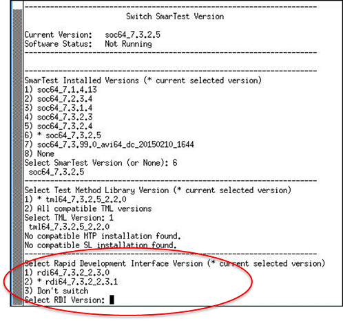

Installing and using SmartRDI
Introduces the preparation to be done before using SmartRDI in your test method programming.
About this task
Starting from SmartRDI 7.4.4, SmartRDI is released together with SmarTest. SmartRDI is automatically installed during the installation of SmarTest. However, you can also install a SmartRDI package separately if you intend to use a specific SmartRDI version.
Before you begin
- Get a SmartRDI installation package for a specific SmartRDI version and SmarTest version to use.
- Make sure you are using SmarTest 7.4.0.0 or a later SmarTest version.
Procedures
Installation
- Switch to the root user (in a shell type su -).
- Install the SmartRDI rpm package with the command like below. If you are using a different
package, change the package name to what you are
using.
rpm -ivh rdi_7.2.2v2.1.1.0-1-0.el5-1.x86_64.rpm
Using SmartRDI
- Create a test method class file and include the file
"rdi.hpp"in the header part. - (optional) Create a RDI_Configure file in the testmethod directory of your device and specify the configuration according to your needs.
Switching SmartRDI version
If you have installed the package luna-common-142.16.2-0.el5.noarch.rpm or a higher version, switch between SmartRDI versions in the Switch SmarTest Version window.

- Open the Switch SmarTest Version window.
- Move the cursor to the end of Select RDI Version.
- Type the order number of the expected version.
- Select Enter to switch.
Results
You can use the classes and functions defined in SmartRDI to program your test method.
Functional changes
- Introduced in SmartRDI 2.1.0